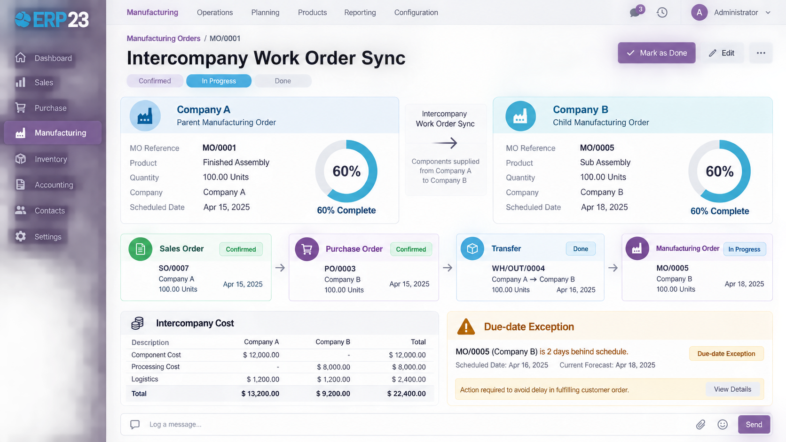

Auto-creates a manufacturing order in Company B when Company A's MO needs a component only Company B produces — beyond generic intercompany transfers.
Multi-company manufacturers routinely split production across legal entities — one company builds sub-assemblies, another does final assembly — but core Odoo's intercompany automation stops at the sale/purchase layer: it mirrors a purchase order into a sales order between companies and leaves manufacturing itself untouched. Manufacturing Intercompany Work Order Sync closes that gap. Mark any component as "Produced By Company" a different entity in the same database, and when a manufacturing order needs that component in a quantity stock can't cover, this module raises the intercompany purchase order, lets core `sale_purchase_inter_company_rules` mirror it into a sales order in the producing company, and — once that order is confirmed and stock still isn't enough — creates the follow-up manufacturing order there automatically, keeping the origin order's status and progress visible the whole way through.
Important scope note: this module is built for a same-database, multi-company Odoo setup — the standard way Odoo runs several legal entities on one instance. It works by directly querying and creating `mrp.production`, `sale.order` and `purchase.order` records across those companies inside that one database. It does not synchronize manufacturing orders between two separate Odoo instances/databases — there is no API bridge, webhook, or cross-instance messaging here. If your companies run on separate Odoo databases, this module will not connect them.
A component shortage triggers the intercompany PO/SO and, when needed, a manufacturing order in the producing company — no manual follow-up.
"Waiting on Company B — 60% complete" replaces a generic stock shortage message on the origin MO.
"Check Intercompany Supply" lets a user trigger or retry the sync explicitly if the automatic hook didn't fire.
A clear warning surfaces when Company B's MO is forecast to finish later than the parent order needs it.
A cron keeps finding mirrored sales orders, creating child MOs, and refreshing status/progress on its own.
The intercompany SO/PO mirroring and costing stay on core `sale_purchase_inter_company_rules` — this module only adds the MRP layer on top.
Core `sale_purchase_inter_company_rules` already automates the intercompany sale/purchase mirroring — it just stops there. This module doesn't reinvent that mechanism; it watches for the one gap it leaves open: a component only another company can actually manufacture. When that happens, it raises the same intercompany PO core would expect, lets core mirror it into an SO, and only then adds the missing piece — a manufacturing order in the producing company, linked back so its status is never a mystery.
A plain stock shortage message tells a planner nothing about why a component is missing or when it's coming. This module replaces that with a live "Waiting on Company B — 60% complete" status and a due-date exception the moment the supplying company's own schedule slips. And because intercompany orchestration is defense-in-depth, not a gatekeeper, the automatic check runs after the MO's own confirmation succeeds and is wrapped so it can never block or fail that confirmation — a manual "Check Intercompany Supply" button is always there to retry.
ERP23
Developed and maintained by ERP23.
Website: https://www.erp-23.com/
Email: erp23@brainstation-23.com